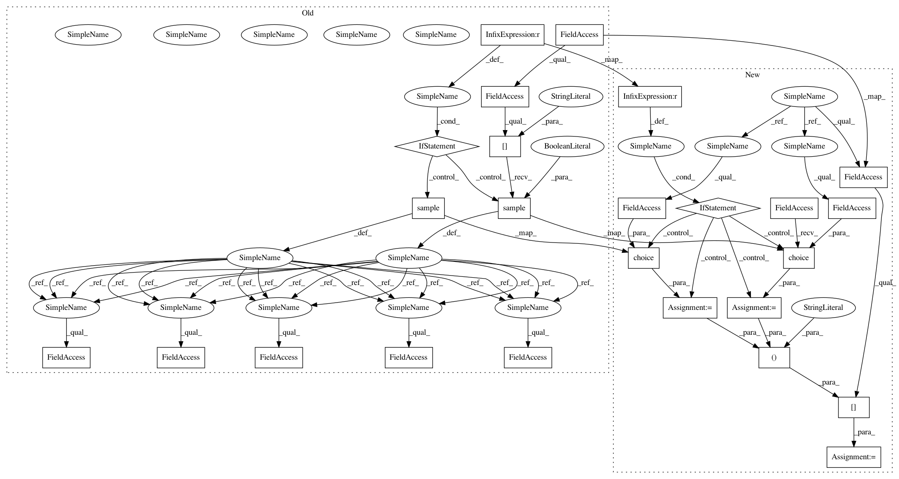

3031109e464b9211201f6e9fcc838e8afafccdbb,Reinforcement_learning_TUT/5.1_Double_DQN/RL_brain.py,DoubleDQN,learn,#DoubleDQN#,123
Before Change
self._replace_target_params()
print("\ntarget_params_replaced\n")
batch_memory = self.memory.sample(self.batch_size) \
if self.memory_counter > self.memory_size \
else self.memory.iloc[:self.memory_counter].sample(self.batch_size, replace=True)
q_next, q_eval4next = self.sess.run(
[self.q_next, self.q_eval],
feed_dict={self.s_: batch_memory.iloc[:, -self.n_features:], // next observation
self.s: batch_memory.iloc[:, -self.n_features:]}) // next observation
q_eval = self.sess.run(self.q_eval, {self.s: batch_memory.iloc[:, :self.n_features]})
q_target = q_eval.copy()
batch_index = np.arange(self.batch_size, dtype=np.int32)
eval_act_index = batch_memory.iloc[:, self.n_features].astype(int)
reward = batch_memory.iloc[:, self.n_features + 1]
if self.double_q:
max_act4next = np.argmax(q_eval4next, axis=1) // the action that brings the highest value is evaluated by q_eval
selected_q_next = q_next[batch_index, max_act4next] // Double DQN, select q_next depending on above actions
else:
selected_q_next = np.max(q_next, axis=1) // the natural DQN
q_target[batch_index, eval_act_index] = reward + self.gamma * selected_q_next
_, self.cost = self.sess.run([self._train_op, self.loss],
feed_dict={self.s: batch_memory.iloc[:, :self.n_features],
self.q_target: q_target})
self.cost_his.append(self.cost)
After Change
e_params = tf.get_collection("eval_net_params")
self.sess.run([tf.assign(t, e) for t, e in zip(t_params, e_params)])
def learn(self):
if self.learn_step_counter % self.replace_target_iter == 0:
self._replace_target_params()
print("\ntarget_params_replaced\n")
if self.memory_counter > self.memory_size:
sample_index = np.random.choice(self.memory_size, size=self.batch_size)
else:
sample_index = np.random.choice(self.memory_counter, size=self.batch_size)
batch_memory = self.memory[sample_index, :]
q_next, q_eval4next = self.sess.run(
[self.q_next, self.q_eval],
feed_dict={self.s_: batch_memory[:, -self.n_features:], // next observation
In pattern: SUPERPATTERN
Frequency: 3
Non-data size: 25
Instances
Project Name: MorvanZhou/tutorials
Commit Name: 3031109e464b9211201f6e9fcc838e8afafccdbb
Time: 2017-03-06
Author: morvanzhou@gmail.com
File Name: Reinforcement_learning_TUT/5.1_Double_DQN/RL_brain.py
Class Name: DoubleDQN
Method Name: learn
Project Name: MorvanZhou/tutorials
Commit Name: 3031109e464b9211201f6e9fcc838e8afafccdbb
Time: 2017-03-06
Author: morvanzhou@gmail.com
File Name: Reinforcement_learning_TUT/5_Deep_Q_Network/RL_brain.py
Class Name: DeepQNetwork
Method Name: learn
Project Name: MorvanZhou/tutorials
Commit Name: 3031109e464b9211201f6e9fcc838e8afafccdbb
Time: 2017-03-06
Author: morvanzhou@gmail.com
File Name: Reinforcement_learning_TUT/6_OpenAI_gym/RL_brain.py
Class Name: DeepQNetwork
Method Name: learn
Project Name: MorvanZhou/tutorials
Commit Name: 3031109e464b9211201f6e9fcc838e8afafccdbb
Time: 2017-03-06
Author: morvanzhou@gmail.com
File Name: Reinforcement_learning_TUT/5.1_Double_DQN/RL_brain.py
Class Name: DoubleDQN
Method Name: learn